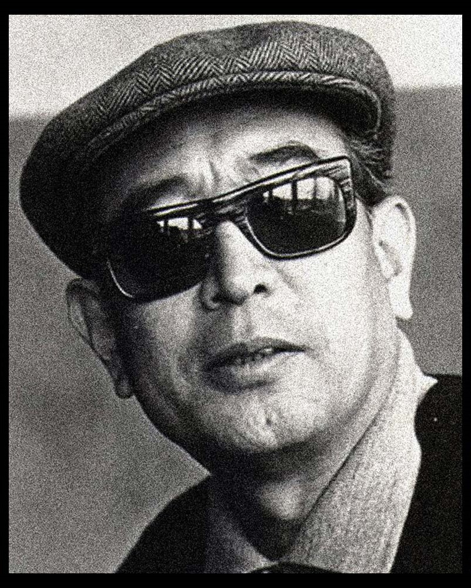

Akira Kurosawa, a name that shines brightly in the realm of cinema. Born on March 23, 1910, in Tokyo, Japan, Kurosawa's influence on filmmaking is immeasurable. He is celebrated as one of the most influential and visionary directors in the history of cinema.
Akira Kurosawa
The Legendary Filmmaker Who Transformed Cinema

Biography
Akira Kurosawa (Japanese: 黒澤 明, Hepburn: Kurosawa Akira, March 23, 1910 - September 6, 1998) was a Japanese filmmaker and painter who directed 30 films in a career spanning over five decades. He is widely regarded as one of the greatest and most influential filmmakers in the history of cinema. Kurosawa displayed a bold, dynamic style, strongly influenced by Western cinema yet distinct from it; he was involved with all aspects of film production.
Kurosawa entered the Japanese film industry in 1936, following a brief stint as a painter. After years of working on numerous films as an assistant director and scriptwriter, he made his debut as a director during World War II with the popular action film Sanshiro Sugata (1943). After the war, the critically acclaimed Drunken Angel (1948), in which Kurosawa cast the then little-known actor Toshiro Mifune in a starring role, cemented the director's reputation as one of the most important young filmmakers in Japan. The two men would go on to collaborate on another fifteen films.
Rashomon (1950), which premiered in Tokyo, became the surprise winner of the Golden Lion at the 1951 Venice Film Festival. The commercial and critical success of that film opened up Western film markets for the first time to the products of the Japanese film industry, which in turn led to international recognition for other Japanese filmmakers. Kurosawa directed approximately one film per year throughout the 1950s and early 1960s, including a number of highly regarded (and often adapted) films, such as Ikiru (1952), Seven Samurai (1954), Throne of Blood (1957), Yojimbo (1961) and High and Low (1963). After the 1960s he became much less prolific; even so, his later work—including two of his final films, Kagemusha (1980) and Ran (1985)—continued to receive great acclaim.
In 1990, he accepted the Academy Award for Lifetime Achievement. Posthumously, he was named "Asian of the Century" in the "Arts, Literature, and Culture" category by AsianWeek magazine and CNN, cited there as being among the five people who most prominently contributed to the improvement of Asia in the 20th century. His career has been honored by many retrospectives, critical studies and biographies in both print and video, and by releases in many consumer media.
"In a mad world, only the mad are sane"
Akira Kurosawa's Ran (1985).
Filmography
Ikiru
1952
Rashomon
1950
Seven Samurai
1954
Yojimbo
1961
Ran
1985
High and Low
1963